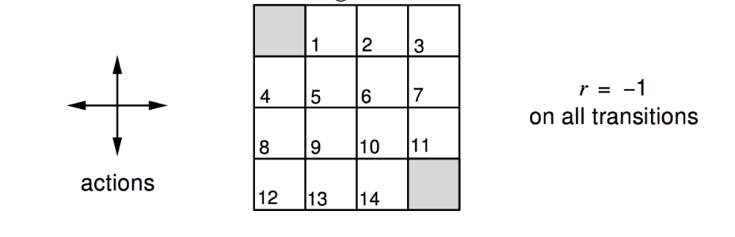
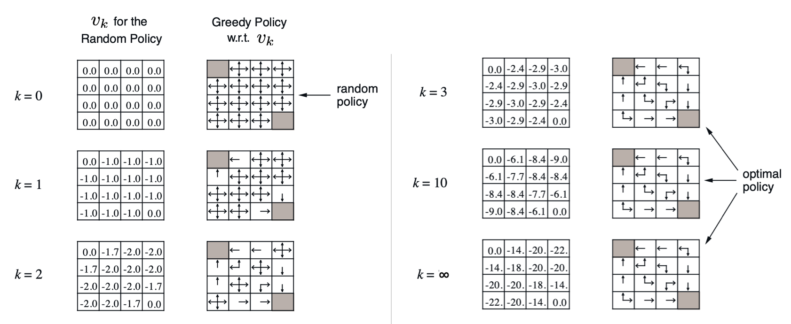
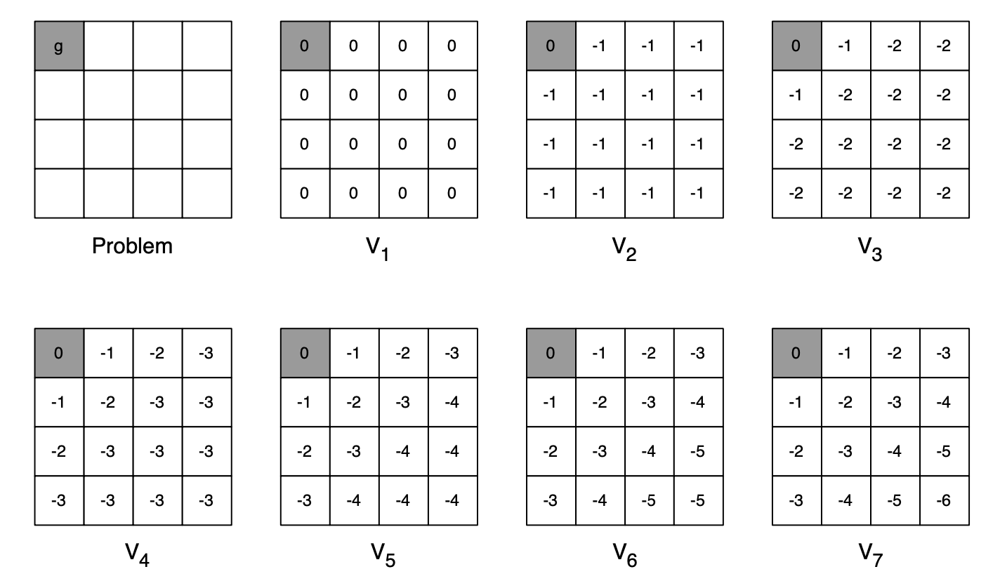
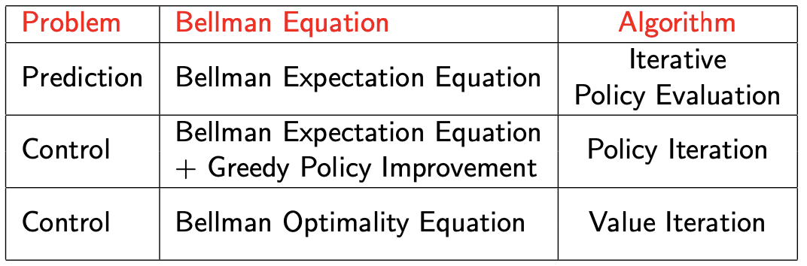

[UCAS强化学习]3·动态规划
1 动态规划简介
算法课上我们都学过，动态规划解决的问题具有两个性质：
- 最优子结构 (optimal substructure)：问题最优解包含子问题的解也是子问题的最优解
- 重叠子问题 (overlapping subproblems)：使用递归算法自顶向下对问题进行求解， 每次产生的子问题并不总是新问题
马尔可夫决策过程满足这两个性质：
- 贝尔曼方程具有递归形式
- 价值函数可以保存和重复利用
因而可以用动态规划解决。事实上，用动态规划的术语来说，价值函数就是 DP 状态，贝尔曼方程就是 DP 转移方程。
2 迭代策略评估
所谓策略评估，即给定策略 \(\pi\)，估计该策略下的价值函数 \(v_\pi\)。这可以通过求解贝尔曼期望方程实现： \[ v_\pi(s)=\sum_{a\in\mathcal A}\pi(a\vert s)\left[\mathcal R_s^a+\gamma\sum_{s'\in\mathcal S}\mathcal P^a_{ss'}v_\pi(s')\right]\iff \mathbf v=\mathcal R^\pi+\gamma \mathcal P^\pi\mathbf v \] 由于直接矩阵求逆是 \(O(|\mathcal S|^3)\) 的，计算量太大，所以我们考虑使用迭代方法求解。这与数值计算中，我们用迭代法求解线性方程是一样的道理。
回顾：迭代法解线性方程组
基本思想：将 \(Ax=b\) 改写为 \(x= Bx+g\)，并建立迭代格式： \[x^{(k+1)}=Bx^{(k)}+g,\quad k=0,1,2,\ldots\] 其中 \(x^{(0)}\) 为初始解向量，\(B\) 为迭代矩阵。迭代法的收敛性依赖于 \(B\)，我们有以下定理。
定理：迭代法收敛当且仅当 \(\rho(B)<1\)，且 \(\rho(B)\) 越小，收敛越快。其中 \(\rho(B)\) 是矩阵 \(B\) 的谱半径。
2.1 迭代策略评估
注意到贝尔曼期望方程正好就是写作了迭代形式的线性方程，因此自然而然地可以建立起迭代格式： \[ \mathbf v_{k+1}=\mathcal R^\pi+\gamma \mathcal P^\pi\mathbf v_k,\quad k=0,1,2,\ldots \] 反复迭代直至收敛，这就是迭代策略评估。
2.2 收敛性证明
以下涉及泛函分析的知识。
设所有价值函数的集合为 \(\mathcal V\)，可以在其上定义加法： \[ \begin{align} +:\quad&\mathcal V\times\mathcal V\to\mathcal V\\ &(\mathbf u,\mathbf v)\to\mathbf u+\mathbf v\\ \text{where}\quad&(u+v)(s)=u(s)+v(s),\quad\forall s\in\mathcal S \end{align} \] 和数乘： \[ \begin{align} \cdot:\quad&\mathcal K\times\mathcal V\to\mathcal V\\ &(k,\mathbf v)\to k\cdot\mathbf v\\ \text{where}\quad&(k\cdot v)(s)=k\cdot v(s),\quad\forall s\in\mathcal S \end{align} \] 定义无穷范数： \[ \Vert\mathbf v\Vert_\infty=\max_{s\in\mathcal S}|v(s)| \] 于是 \((\mathcal V,+,\cdot,\Vert\cdot\Vert_\infty)\) 构成一个赋范空间，同时可以证明它是完备的。在这个空间上，定义贝尔曼期望算子 \(\mathcal T^\pi\) 为： \[ \begin{align} \mathcal T^{\pi}:\quad&\mathcal V\to\mathcal V\\ &\mathbf v_k\to\mathbf v_{k+1}=\mathcal T^{\pi}\mathbf v_k=\mathcal R^{\pi}+\gamma\mathcal P^{\pi}\mathbf v_k \end{align} \]
它将 \(\mathbf v_k\) 映射到 \(\mathbf v_{k+1}\)，映射规则就是迭代策略评估的迭代格式。
可以证明，当 \(\gamma<1\) 时，\(\mathcal T^\pi\) 是一个收缩算子。证明如下：对任意状态 \(s\in\mathcal S\)， \[ \begin{align} \left|(\mathcal T^{\pi}u)(s)-(\mathcal T^{\pi}v)(s)\right|&=\left|\left(\mathcal R^{\pi}(s)+\gamma\sum_{s'\in\mathcal S}\mathcal P^{\pi}_{ss'}u(s')\right)-\left(\mathcal R^{\pi}(s)+\gamma\sum_{s'\in\mathcal S}\mathcal P^{\pi}_{ss'}v(s')\right)\right|\\ &=\gamma\left|\sum_{s'\in\mathcal S}\mathcal P^{\pi}_{ss'}(u(s')-v(s'))\right|\\ &\leq\gamma\left|\max_{s'\in\mathcal S}(u(s')-v(s'))\right|\\ &\leq\gamma\max_{s'\in\mathcal S}\left|u(s')-v(s')\right|\\ &=\gamma\Vert\mathbf u-\mathbf v\Vert_\infty \end{align} \] 故： \[ \Vert\mathcal T^{\pi}\mathbf u-\mathcal T^{\pi}\mathbf v\Vert_\infty=\max_{s\in\mathcal S}\left|(\mathcal T^{\pi}u)(s)-\mathcal T^{\pi}v)(s)\right|\leq\gamma\Vert\mathbf u-\mathbf v\Vert_\infty \] 因此，根据巴拿赫不动点定理可知，迭代策略评估最终会收敛到唯一不动点。
2.3 例子：Small Gridworld

- 本例中使用无衰减的 MDP（\(\gamma=1\)）
- 标号的 14 个格子是非终止状态，阴影格子即终止状态
- 往边界外走定义为保持当前状态不变（相当于被墙弹回来了）
- 每走一步的奖励是 \(-1\)
- 智能体遵循随机策略（四个方向概率 \(1/4\)）
迭代策略评估的过程如下图所示：左列是迭代的 \(\mathbf v_{k}\)，右列是根据当前 \(\mathbf v_{k}\) 基于贪心（走下一步使得 value 最大）得到的策略。（注意格子里的小数没有显示完整）

需要注意的是，右边列出的贪心策略仅作为参考，实际迭代过程没有用到贪心策略——因为迭代策略评估的目的是评价一个给定策略。
从这个例子中可以看见，当价值函数收敛时，贪心策略也收敛到了最优策略，但是后者比前者收敛得更快——在 \(k=3\) 时，贪心策略已经达到最优了，\(k\) 继续增大它也不会改变。
3 策略迭代
迭代策略评估可以评估给定策略 \(\pi\) 下的价值函数，而策略迭代则是基于评估出的价值函数寻找最优策略 \(\pi^\ast\) 的算法。
3.1 策略评估 & 策略提升
给定初始策略 \(\pi\)，策略迭代算法反复执行以下两步：
- 策略评估：评估当前策略下的价值函数 \(v_\pi(s)=\mathbb E[G_t\vert S_t=s]\)
- 策略提升：根据贪心思想更新策略 \(\pi'=\text{greedy}(v_\pi)=\mathop{\text{argmax }}\limits_{a\in\mathcal A}\left(\mathcal R_s^a+\gamma\sum\limits_{s'\in\mathcal S}\mathcal P_{ss'}^av_\pi(s')\right)\)
上述过程最终会收敛到最优策略 \(\pi_\ast\).

3.2 收敛性证明
以确定性策略为例，假设当前策略为 \(\pi(s)\)，那么根据贪心思想，它将被更新为：\(\pi'(s)=\mathop{\text{argmax }}\limits_{a\in\mathcal A}q_\pi(s,a)\)，这意味着 \[ q_\pi(s,\pi'(s))=\max_{a\in\mathcal A}q_\pi(s,a)\geq q_\pi(s,\pi(s))=v_\pi(s) \] 这个式子的含义是，如果我们第一步依照策略 \(\pi'\) 行动，这之后再依照策略 \(\pi\) 行动，那么得到的累积奖励将大于等于一直按照策略 \(\pi\) 行动。反复使用该式，最终可以得到： \[ v_{\pi'}(s)\geq v_\pi(s) \] 因此新的策略优于旧的策略。另外，价值函数是有上界的，因此根据单调有界原理，\(v_\pi(s)\) 收敛。
最终，当策略不再变化时，有： \[ q_\pi(s,\pi_\infty(s))=\max_{a\in\mathcal A}q_{\pi_\infty}(s,a)=q_\pi(s,\pi_\infty(s))=v_{\pi_\infty}(s) \] 于是贝尔曼最优方程得到了满足。因此 \(\mathbf v_{\pi_\infty}=\mathbf v_\ast,\,\pi_\infty=\pi_\ast\).
3.3 策略迭代的扩展
- 在 2.3 节中，我们看到策略的收敛速度快于价值函数的收敛，因此我们可以提前终止迭代过程。例如引入阈值 \(\epsilon\)，或者简单地在 \(k\) 步之后停止迭代。
- 上文我们用迭代策略评估来评价一个策略，用贪心思想来更新策略。事实上，我们不必局限于这两个算法，使用任何一个策略评价方式和任何一个能够得到更优策略的更新方式都行。
4 价值迭代
4.1 价值迭代
回顾贝尔曼最优方程： \[ \begin{gather} v_\ast(s)=\max_a\left(\mathcal R^a_s+\gamma\sum_{s'\in\mathcal S}\mathcal P^a_{ss'}v_\ast(s')\right)\\ \pi_\ast(s)=\mathop{\text{argmax}}_a\left(\mathcal R^a_s+\gamma\sum_{s'\in\mathcal S}\mathcal P^a_{ss'}v_\ast(s')\right) \end{gather} \] 这是一个非线性方程，无法直接求解析解，因此我们考虑迭代法求解。
于是基于贝尔曼最优方程，可以做如下的迭代更新： \[ v_{k+1}(s)=\max_{a\in\mathcal A}\left(\mathcal R^a_s+\gamma\sum_{s'\in\mathcal S}\mathcal P^a_{ss'}v_{k}(s')\right),\quad k=0,1,2,\ldots \] 或写作矩阵形式： \[ \mathbf v_{k+1}=\max_{a\in\mathcal A}(\mathcal R^a+\gamma\mathcal P^a\mathbf v_k),\quad k=0,1,2,\ldots \] 这就是价值迭代算法。
4.2 收敛性证明
沿用 2.2 节中的记号，定义价值迭代算子 \(\mathcal T\)： \[ \begin{align} \mathcal T:\quad &\mathcal S\to\mathcal S\\ &\mathbf v_k\to\mathbf v_{k+1}=\mathcal T\mathbf v_k\\ \text{where}\quad&v_{k+1}(s)=[\mathcal T\mathbf v_k](s)=\max_{a\in\mathcal A}\left(\mathcal R^a_s+\gamma\sum_{s'}\mathcal P_{ss'}^av_k(s')\right),\quad\forall s\in\mathcal S \end{align} \] 它将 \(\mathbf v_k\) 映射到 \(\mathbf v_{k+1}\)，映射规则就是价值迭代的迭代格式。那么贝尔曼最优方程可以写作 \(\mathbf v_\ast=\mathcal T\mathbf v_\ast\).
可以证明，当 \(\gamma<1\) 时，\(\mathcal T\) 是一个收缩算子。证明如下：对任意状态 \(s\in\mathcal S\)， \[ \begin{align} \Big|[\mathcal T\mathbf u](s)-[\mathcal T\mathbf v](s)\Big|&=\left|\max_{a\in\mathcal A}\left(\mathcal R^a_s+\gamma\sum_{s'}\mathcal P_{ss'}^au(s')\right)-\max_{a\in\mathcal A}\left(\mathcal R^a_s+\gamma\sum_{s'}\mathcal P_{ss'}^av(s')\right)\right|\\ &\leq\max_{a\in\mathcal A}\left|\left(\mathcal R^a_s+\gamma\sum_{s'}\mathcal P_{ss'}^au(s')\right)-\left(\mathcal R^a_s+\gamma\sum_{s'}\mathcal P_{ss'}^av(s')\right)\right|\\ &=\gamma\max_{a\in\mathcal A}\left|\sum_{s'}\mathcal P_{ss'}^a\left(u(s')-v(s')\right)\right|\\ &=\gamma\left|\max_{s'\in\mathcal S}\left(u(s')-v(s')\right)\right|\\ &\leq\gamma\Vert \mathbf u-\mathbf v\Vert_\infty \end{align} \] 故： \[ \left\Vert\mathcal T\mathbf u-\mathcal T\mathbf v\right\Vert_\infty=\max_{s\in\mathcal S}\left|(\mathcal Tu)(s)-(\mathcal Tv)(s)\right|\leq\Vert\mathbf u-\mathbf v\Vert_\infty \] 因此，根据巴拿赫不动点定理可知，价值迭代最终会收敛到唯一不动点。
4.3 例子：最短路

从这个例子我们可以看出，价值迭代的过程没有一个显式的策略，甚至迭代过程中的价值函数可能根本无法对应到某种策略上。但最终，它会收敛到最优价值函数。
学习到这里，我们做一个小结：

- 迭代策略评估通过迭代法解贝尔曼期望方程，求解给定策略下的价值函数
- 策略迭代通过策略评估和策略提升两个步骤的交替进行，求解最优策略
- 价值迭代通过迭代法解贝尔曼最优方程，求解最优策略
5 维度灾难
计算一下时间复杂度：
- 迭代策略评估：每次迭代 \(O(|\mathcal S|^2|\mathcal A|)\)
- 策略迭代：
- 使用迭代策略评估：每次迭代 \(O(|\mathcal S|^2|\mathcal A|)\)
- 使用矩阵求逆：每次迭代 \(O(|\mathcal S|^3+|\mathcal S|^2|\mathcal A|)\)
- 价值迭代：每次迭代 \(O(|\mathcal S|^2|\mathcal A|)\)
可见三个算法的复杂度都很高，对于大规模问题而言效率低下。在接下来的课程中，我们将介绍蒙特卡洛和时间差分方法，相比动态规划方法，它们并不考虑所有的后继动作和状态，从而降低了复杂度。